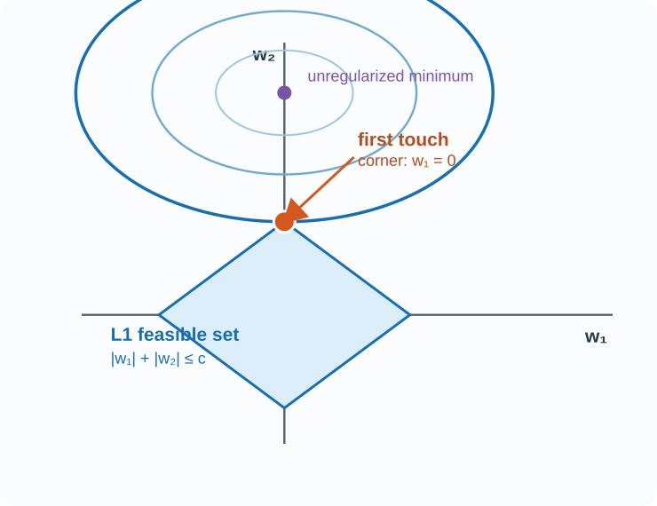
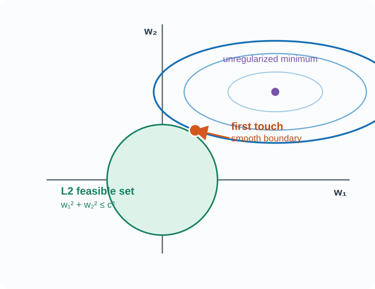

L1/L2 正则化：首次接触几何图
把模型暂时缩小到两个 weights：(w_1,w_2)。核心问题是：在正则化允许的 weights 中，哪一组能取得最低的 data loss？
Teacher source / 题目来源：files-from-teacher/BagOfQuestions/BagOfQuestions-session-6-ah.md
1. 先读懂坐标、等高线与约束区域
图上的每一个点都是一组可能的参数 ((w_1,w_2))。蓝色椭圆是 data-loss contours（data loss 等高线）：同一条椭圆上的点有相同的 training-data loss。椭圆越靠近紫色点（未正则化最优点），data loss 越低。
feasible region（可行区域） 是正则化允许选择的 weights 集合。蓝色菱形对应 L1，绿色圆形对应 L2；两者都以原点 ((0,0)) 为中心。
L1：菱形约束（diamond constraint）

L2：圆形约束（circular constraint）

2. 为什么“首次接触”就是答案？
中文：先看没有正则化时的最佳点；它的 data loss 最低，但可能落在允许区域外。逐渐把等高线扩大，直到第一次碰到菱形或圆形。更小的等高线没有任何合法参数；更大的等高线 loss 更高。因此首次接触点就是正则化解。
3. 公式与稀疏解结论
L1 objective: Ltrain(W) + λ Σj|Wj| L2 objective: Ltrain(W) + λ ΣjWj2中文解释：L1 的菱形在坐标轴上有尖角；若首次接触发生在尖角，某个 weight 恰好为 0，因此能产生 sparse solution。L2 是光滑圆形，通常使 weights 变小，但不倾向恰好变为 0。
English: L1 can produce sparse solutions because its diamond has corners on coordinate axes. L2 usually shrinks weights smoothly because its circular boundary has no corners.
Exam-ready answer
English: “L1 regularization uses an absolute-value penalty and has a diamond-shaped constraint region. Its first-touch point often occurs at a corner, so it can set some weights exactly to zero. L2 regularization uses a squared penalty and has a circular constraint region; it usually shrinks weights smoothly. In both cases, the solution is where the lowest feasible data-loss contour first touches the constraint region.”
中文：L1 使用绝对值惩罚，约束区域是菱形；首次接触常发生在尖角，因此可使某些权重恰好为 0。L2 使用平方惩罚，约束区域是圆形，通常平滑地缩小权重。两种情况下，解都是最低可行 data-loss 等高线首次接触约束区域的位置。